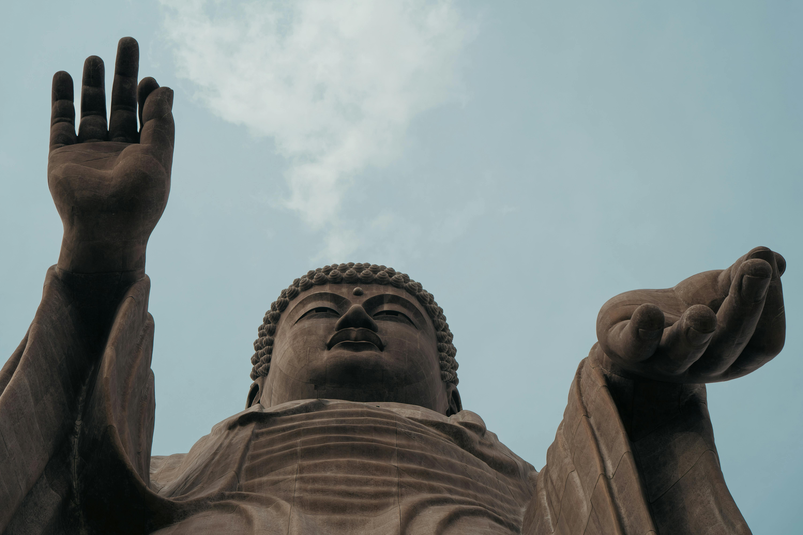
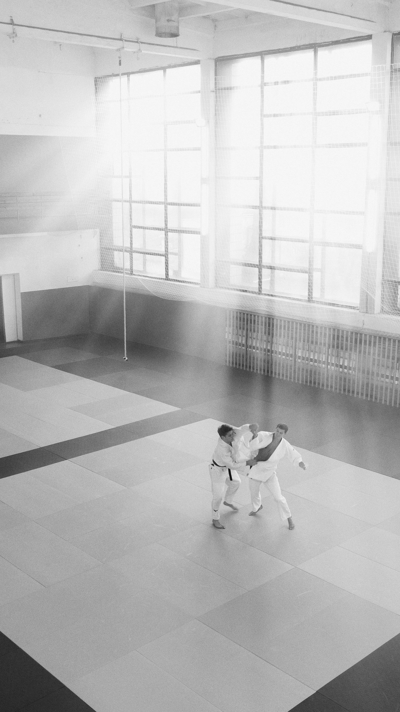
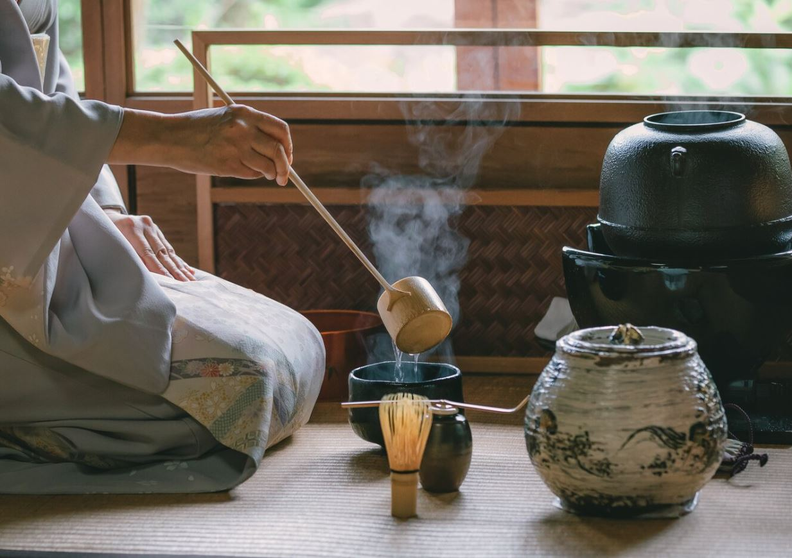
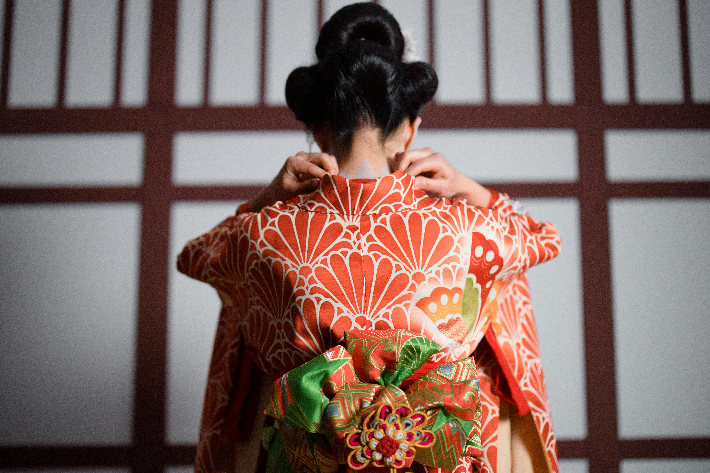
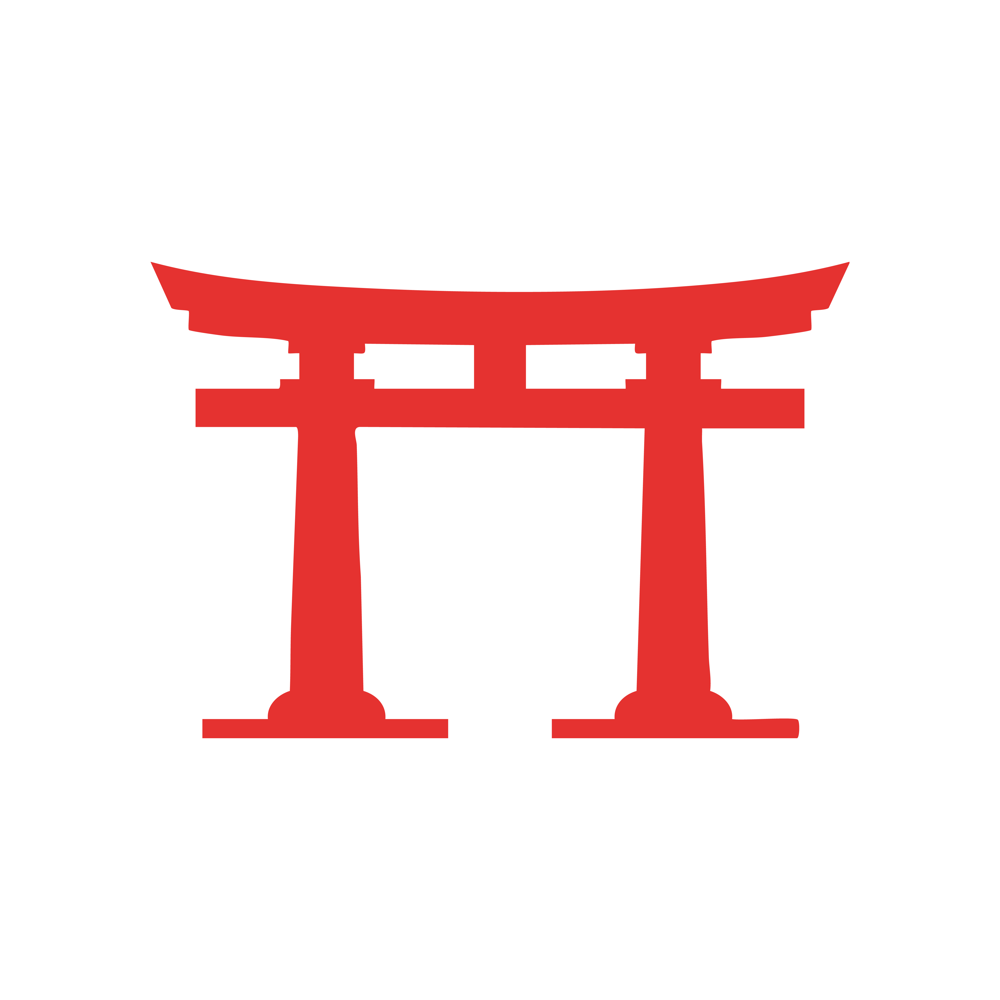
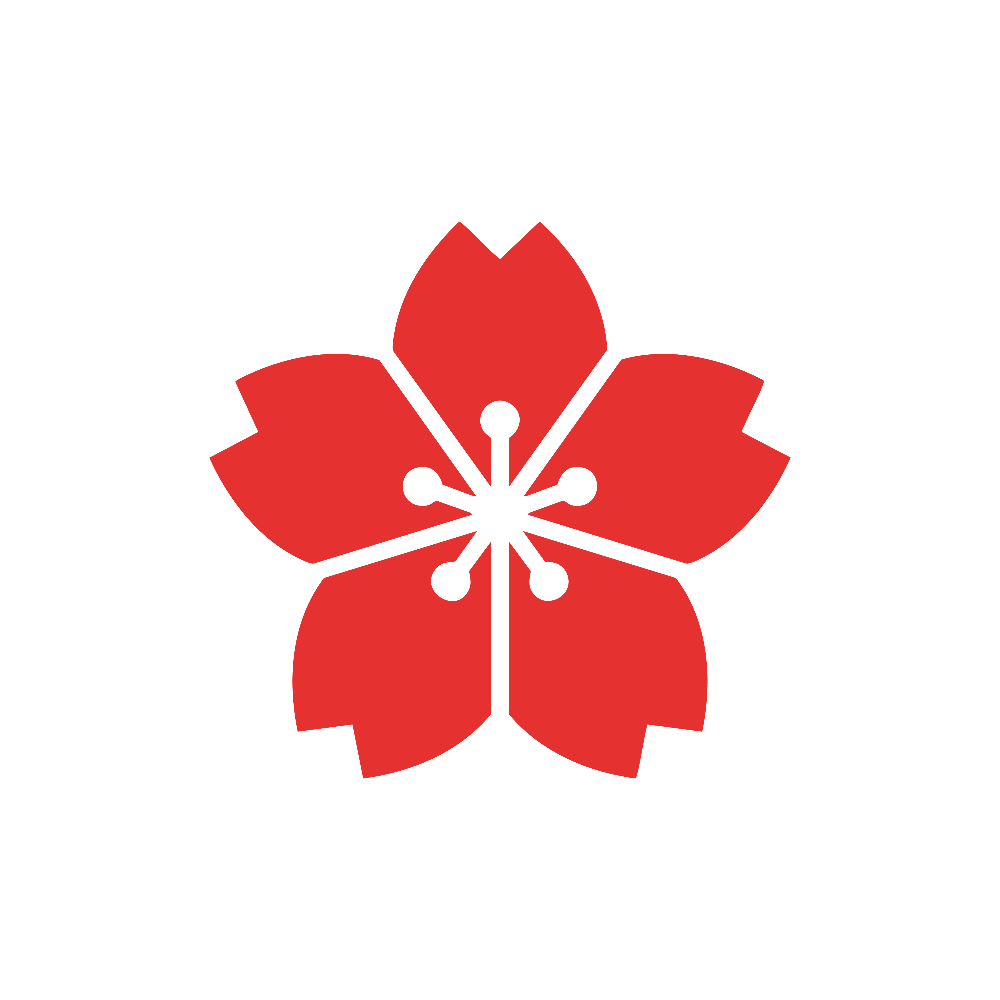
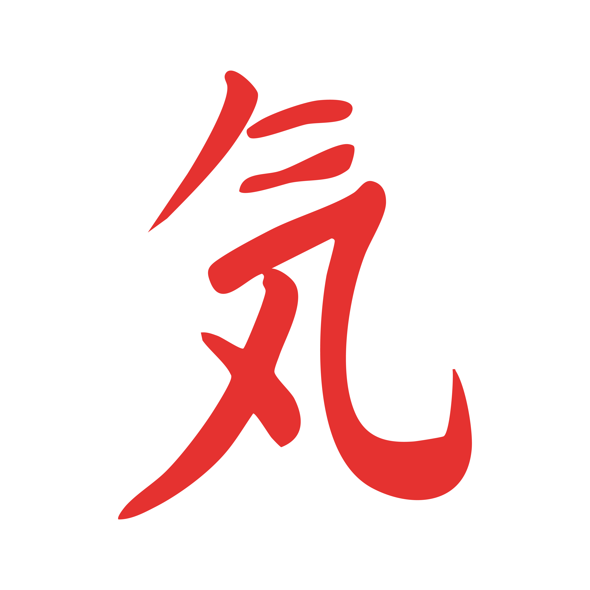
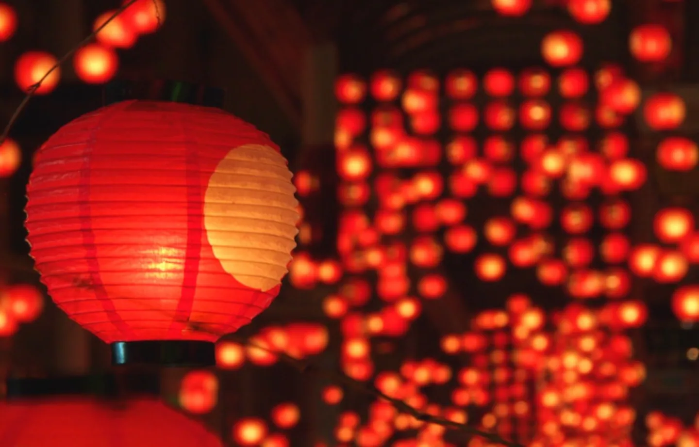
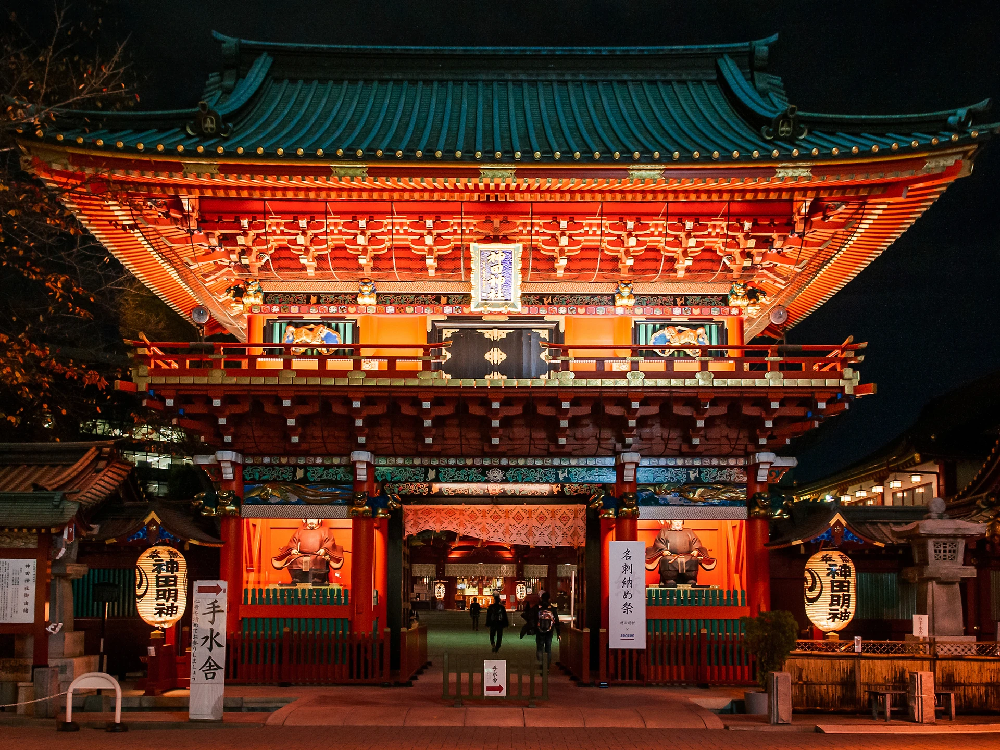

CULTURA
EL RESPETO, LA ARMONÍA Y EL CUIDADO POR LOS DETALLES OCUPAN UN LUGAR CENTRAL
La cultura de Japón se caracteriza por el equilibrio entre tradición y modernidad. Conserva costumbres ancestrales como ceremonias, festivales y templos.
JU-JUTSU

Arte marcial tradicional desarrollado por los samuráis como método de defensa cuerpo a cuerpo.
CEREMONIA DEL TÉ

Práctica tradicional que consiste en la preparación y el servicio del Matcha siguiendo rituales precisos.
USO DEL KIMONO

Vestimenta tradicional utilizada en celebraciones, de diseño elegante y formas estructuradas.

Respeto
Valorar fundamental en las relaciones y en la vida diaria.
Armonía
Buscar el equilibrio entre las personas y con el entorno.

Estetica
La belleza en los detalles simples y naturales

Cuidado
Atención y consideración hacia los demás
FESTIVIDADES DESTACADAS
HANAMI

Celebración de la floración de los cerezos. Un momento para contemplar la belleza natural.
MATSURI

Festivales tradicionales llenos de música y bailes que honran a los dioses.
Año nuevo

Tiempo de renovación y buenos deseos. Se visitan templos, se hacen oraciones y se celebra con la familia.
CULTURA EN UNA PALABRA
IKIGAI (生き甲斐)
Tu razón de ser. El equilibrio entre tu pasión y tu propósito.